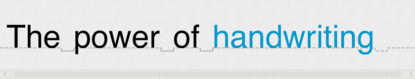

The Single Line Text Widget (SLTW) for iOS is an interactive input method enabling users to write a single line of text using handwriting. It is designed to ensure a natural, handwriting-based HMI with real-time recognition and ink editing gestures, thanks to a user-friendly interface.
The widget manages a single line of text, modeling it as an infinite horizontal ribbon, also known as the writing area. As the user writes, the ribbon automatically scrolls and turns handwritten ink into typeset characters.
The scroll bar allows the user to go back and forth the line to change text - in case it has not been properly recognized - either with editing gestures or by choosing a candidate suggested by the widget.
Here is a list of supported features:
